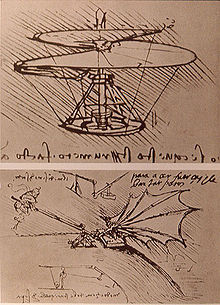
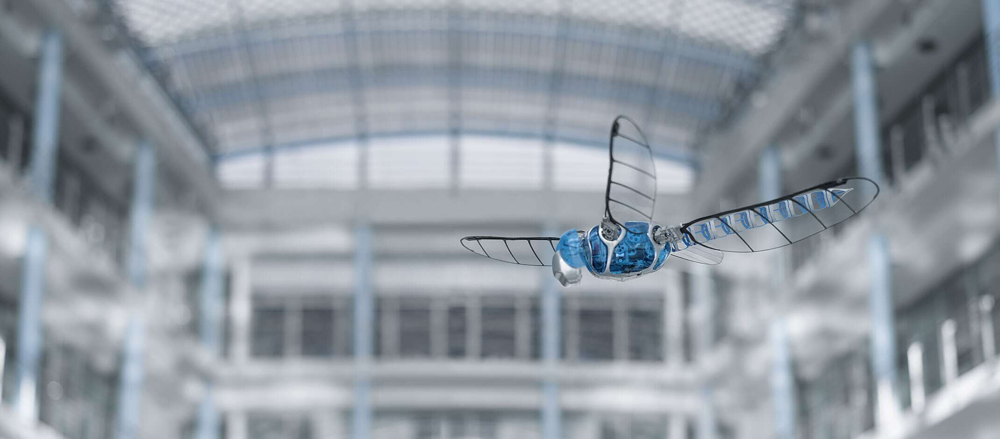
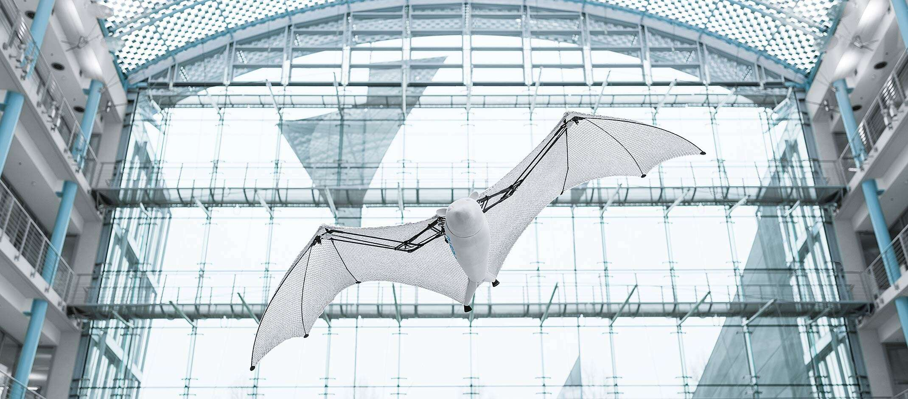

Ornithopter (od grčkog ornithos „ptica“ i pteron „krilo“) je letelica
koja leti mašući krilima. Dizajneri pokusvaju da imitiraju ́let:
ptica, slepih miševa i insekata. Iako se mašine mogu razlikovati u
obliku, obično se grade u istom obimu kao i ova leteća stvorenja.
Dele se na dve opšte vrste: one sa motorima i one koje pokreću mišići
pilota.

Istorija
Pre oko 500 godina, Leonardo da Vinci istraživao je kako ptice
lete. Nacrtao je prvi tradicionalni nacrt Ornithoptera.
Francuz Gustave Truve demonstrirao je prve uspešne modele Ornithoptera
ispred Francuske akademije nauka 1870. Godine.
Lavrence Hargrave je oko 1890. godine napravio razne ornithoptore,
pogonjene parom i komprinovanim vazduhom.
SmartBird je naziv ultralakog modela letelice koja je razvijena kao
deo Festovog Bionic Learning Netvorka sa fokusom na dobru
aerodinamiku i maksimalnu okretljivost. U aprilu 2011. SmartBird je
predstavljen javnosti na sajmu u Hannoveru.
Za razliku od prethodnih uređaja Smart bird imitira let galeba i
tako može sam da uzleti, leti i sleti bez dodatnog pogona.
Njegova krila ne samo da se krecu gore-dole, već se i ciljano
uvijaju.
Animacija desnog krila
Festo SmartBird
na aero-sajmu
u Hanoveru
Karakteristike
Dužina trupa:
1,07 m
Raspon krila:
1,96 m
Težina:
0,450 kg
Baterija:
Litijum-polimerna baterija, 2 ćelije, 7,4 V, 450 mAh
Servos:
2 digitalna servo servoa sa pokretačkom silom od 35 N za
kontrolu glave i repa, 2 digitalna servo servoa za
torziju krila sa hodom od 45 stepeni za 0,03 sek
El. Snaga:
23 vati
Struktura:
Lagana konstrukcija sa okvirima i lopaticama od plastike
ojačane karbonskim vlaknima

BionicOpter
BionicOpter je ornithopter kompanije festo koji je napravljen po
uzoru na let insekata.
Može da leti kao helikopter, ali i kao avion, uključujući lebdenje i
plovidbu.

Flying Fox
Dug je 87 centimetara sa rasponom krila od 228 cm, ali težak je samo
580 grama.
Leteće lisice su najveći slepi miševi na svetu i kao takva, njihova
krila se sastoje od membrana kože, a ne od perja.
Leteća membrana modela je tanka i izuzetno lagana, a istovremeno i
robusna.
Sastoji se od dva hermetička filma i pletene elastanske tkanine,
koji su zavareni na približno 45.000 tačaka.
Struktura saća tkanine sprečava da se male pukotine u letećoj
membrani povećaju. To znači da Flying fox može nastaviti da leti čak
i ako tkanina pretrpi manja oštećenja.
{kind=link}
{kind=link}
{kind=link}
.jpg)
.jpg)
.jpg)
.jpg)